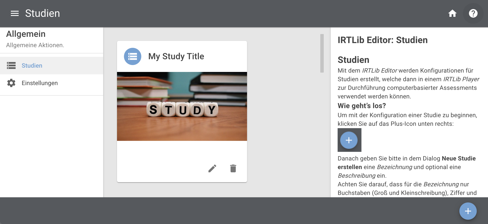
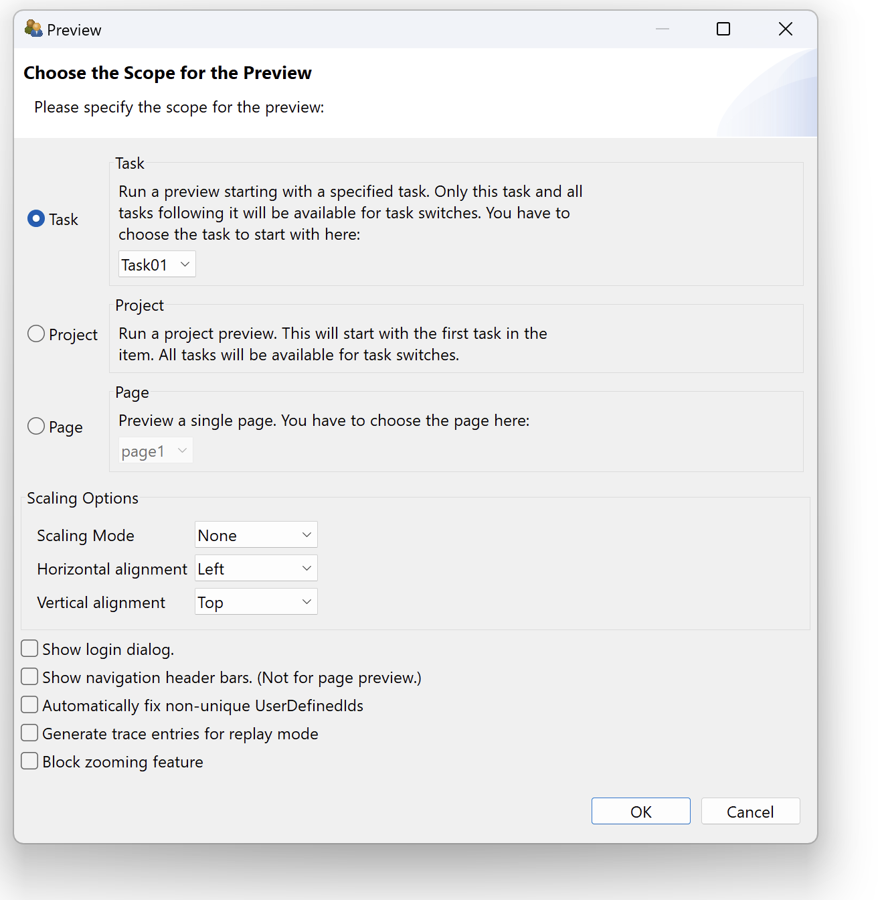
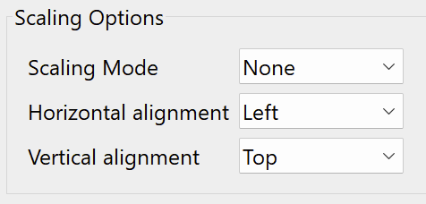

Vorbereitung: Übersicht / Preparation: Overview
Basiskonfigurationen für Studie festlegen (Info): Zu den Basiskonfigurationen, die sich auf den Inhalt einer vorbereiteten Studie beziehen, gehören die Studienbezeichnung und -beschreibung, der Anmeldemodus, die Anzeigekonfiguration, das Menü für die Testadministratoren und die Angabe, wie nach Abschluss aller in einer Studie definierten Inhalte fortgefahren werden soll (siehe Abschnitt Studien für weitere Einzelheiten).
Erstellen eines neuen Erhebungsteils: Jede Studie besteht aus einem oder mehreren Erhebungsteilen. Erhebungsteile werden als Bausteine von Assessments betrachtet, die zusammen verwaltet werden, wie z.B. Items aus einer bestimmte Domäne. Erhebungsteile vom Typ CBA ItemBuilder können verwendet werden, um CBA ItemBuilder-Aufgaben in einer linearen Sequenz oder mit Blockly-basiertem Routing zu administrieren.
Hinweis: Das Anlegen eines Erhebungsteils ist immer notwendig.Beachten Sie, dass jede Studie mindestens einen im IRTlib Editor definierten Erhebungsteil benötigt, bevor eine Studienkonfiguration zur Datenerhebung mit einem IRTlib Player verwendet werden kann.
Grundeinstellungen für Erhebungsteil konfigurieren (Info): Ein Erhebungsteil vom Typ CBA ItemBuilder basiert auf einer Menge von CBA ItemBuilder-Tasks. Jede CBA ItemBuilder-Projektdatei benötigt mindestens einen Task, es werden aber auch Projekte mit mehreren Tasks unterstützt. Wenn CBA ItemBuilder-Inhalte mit einem gemeinsamen Zeitlimit über Tasks hinweg administriert werden sollen, erlauben Erhebungsteile die Zuordnung von Aufgaben zu einer Struktur, die Assessmentinhalte unterscheidet, welche vor einem zeitlich begrenzten Abschnitt administriert werden (z.B. Instruktionen, im Abschnitt Vorspann-Items), Inhalte die nach einem zeitlich begrenzten Abschnitt administriert werden (z.B. Danksagung, im Abschnitt Nachspann-Items) und dazwischen liegende Aufgaben mit begrenzter Zeit (Items, siehe Abschnitt Erhebungsteile).
Items Hinzufügen: Um die Definition eines Erhebungsteils abzuschließen, müssen die CBA ItemBuilder-Projektdateien in den Abschnitt Items importiert werden. Standardmäßig wird davon ausgegangen, dass die Reihenfolge der CBA ItemBuilder-Tasks linear ist. Wenn jedoch das Routing für einen Studienteil aktiviert ist, kann das Blockly-basierte Ablaufdefinition verwendet werden, um verschiedene Testdesigns zu implementieren (z. B. mehrere Hefte, mehrstufige Tests usw.).
Eingebettete Programhilfe
Für die Verwendung des IRTlib Editors ist eine Programmhilfe direkt in die Anwendung integriert, welche über das kleine ?-Symbol oben rechts eingeblendet werden kann.

Die Inhalte dieser Hilfe-Seiten aus dem IRTlib Editor sind in diese IRTlib Dokumentation integriert und werden immer in diesem Rahmen mit der überschrift Eingebettete Programmhilfe dargestellt.
Vorbereitung von CBA ItemBuilder-Inhalten
Die IRTlib Software wird benötigt, um die mit dem CBA ItemBuilder erstellten Assessmentinhalte anzuzeigen und für Datenerhebungen zu verwenden. Dafür müssen die Projektdateien (ZIP-Archive), die mit dem CBA ItemBuilder erstellt werden können vorliegen.
Einsprungpunkt (Task)
Jede CBA ItemBuilder-Projektdatei muss mindestens einen Task definieren. Nur Tasks können in der IRTlib Software verwendet werden. Das ein Task vollständig definiert ist, lässt sich in der Preview des CBA ItemBuilder leicht überprüfen:

Assessmentinhalte können mit der IRTlib Software aus einzelnen Task zusammgengesetzt werden. Die Reihenfolge von Tasks kann statisch als lineare Sequenz oder als probrammierten Ablauf in Blockly definiert werden. Aus der IRTlib Software heraus können keine einzelnen Seiten innerhalb von CBA ItemBuilder-Tasks angesteuert werden.
CBA ItemBuilder-Projektdateien welche nur über die Option Project oder Page in der Preview angezeigt werden können, lassen sich in der IRTlib Software nicht verwenden.
Verhalten der Anzeige (Scaling Options)
Mit Hilfe der Preview des CBA ItemBuilder kann auch geprüft werden, dass die Assessmentinhalte in der gewünschten Skalierung, die unter Scaling Options eingestellt werden kann, den Erfordernissen entsprechend angezeigt werden.

Einstellungen analog zur Preview können in dem IRTlib Editor für die Anzeigeeinstellungen einer Studie definiert werden (siehe Abschnitt Studien).
Definition des Scorings (Ergebnisdaten)
Die IRTlib Software ist dafür gedacht, Daten mit Hilfe von CBA ItemBuilder-Task zu erheben. Was aus der Bearbeitung eines Tasks an Ergebnisvariablen gespeichert wird, können Itemautoren in der Scoring-Definition einer Tasks definieren.
Aus der Bearbeitung von Tasks werden die als Classes definierten Ergebnisvariablen gespeichert, deren Werte entweder einzelne Hits sein können, oder die Übernahme von Informationen mit Hilfe des so-genannten ResultText-Operators im CBA ItemBuilder.
Mit Hilfe des eingebauten Scoring Debug Window sollte das Scoring einzelner CBA ItemBuider-Tasks bereits im CBA ItemBuilder geprüft werden, bevor die Assessmentinhalte mit Hilfe der IRTlib Software zu Studien mit einem oder mehreren Erhebungsteilen kombiniert werden. Weitere Hinweise zu vorgeschlagenen Prüfungen sind im Abschnitt Auslieferungen Testen und Freigeben formuliert.
Ohne weitere Konfiguration werden Log-Daten in den mit dem CBA ItemBuilder erstellten Assessmentinhalten automatisch erfasst und über die IRTlib Software gesammelt.
Integrierte Multimedia-Inhalte (Ressourcen)
Die mit dem CBA ItemBuilder erstellten Assessmentinhalte können Multimedia-Inhalte (Bilder, Videos, Audiodateien) enthalten. Bilder und Videos werden dabei in einer Größe angezeigt, die in der entsprechenden Komponente des CBA ItemBuilder im Page Editor verwendet wird. In den Projektdateien werden Bilder, Videos und Audiodateien als Ressourcen gespeichert, sobald diese über den Ressource Browser eingefügt wurden. Nicht verwendete Ressourcen bleiben dabei in den Projektdateien enthalten.
Die Dateigröße von CBA ItemBuilder-Projekdateien ist für die Verwendung insbesondere in Online-Auslieferungen relevant und sollte so klein wie möglich gehalten werden.
Vor der Verwendung von CBA ItemBuilder-Projektdateien wird empfohlen, folgende Punkte zu berücksichtigen:
Bilder und Videos nur in der benötigten Größe: Bilder und Videos können ohne Qualitätsverlust auf die Größe (Breite/Width udn Höhe/Height) reduziert werden, in welcher sie in CBA ItemBuilder-Projekten auch wirklich verwendet werden.
Bilder wenn möglich komprimieren: Ohne die Bildgröße zu verändern können Bilder häufig in der Dateigröße weiter reduziert werden.
Videos wenn möglich komprimieren: Ohne die Video zu verändern können Videos häufig in der Dateigröße weiter reduziert werden.
Audios nicht in höchster Qualität: Wenn nicht notwendig, sollten Audio-Dateien in ihrer Qualität soweit reduziert werden, dass sie noch akzeptabel klingen, aber bzgl. der Übertragungszeiten optimiert sind.
Entfernen nicht verwendeter Ressourcen: Der CBA ItemBuilder stellt eine Schaltfläche im Resource Browser zur verfügung, um nicht verwendeten Ressourcen automatisch zu entfernen. Diese Funktion sollte abschließend genutzt werden, damit die Projekt-Dateien keine unnötigen Ressourcen enthalten.
Ein sorgsamer Umgang mit Ressourcen und eine Optimierung der Dateigröße von CBA ItemBuilder-Projektdateien kann entscheidend für ein flüssiges und reibungsfreie Assessment sein, was sich mit der IRTlib Software online ausliefern und bspw. über Mobilgeräte mit beschränkter Internetbandbreite nutze lässt.
::: :::{.content-visible when-profile=“germanbook”} Die Vorbereitung eines computerbasierten Assessments auf der Grundlage von CBA ItemBuilder-Inhalten beginnt mit der Verwendung des IRTlib-Editors zur Erstellung einer Studienkonfiguration. Dies umfasst in der Regel die folgenden Schritte:
- Voraussetzung: Überprüfen Sie die Verfügbarkeit der Runtime. Der IRTlib Editor kann zur Vorbereitung von Assessments mit im CBA ItemBuilder erstellten Inhalten verwendet werden. Für die Verwendung von CBA ItemBuilder Tasks, die in Projektdateien gespeichert sind, ist eine Runtime (d.h. die Dateien
main.*.jsundmain.*.css) in der Version erforderlich, die genau der Version des CBA ItemBuilders entspricht, der zur Erstellung der Items verwendet wurde (z.B.9.9.0). Bevor Sie den IRTLib-Editor verwenden, vergewissern Sie sich, dass die erforderliche Runtime enthalten ist, oder importieren Sie die Runtime-Dateien (siehe Abschnitt Einstellungen für Details).
Hinweis: Für die Verwendung von CBA ItemBuilder-Items ab Version 9.9 ist dieser Schritt in der Regel nicht notwendig.
- Erstellen einer neuen Studie: Der IRTlib-Editor wird verwendet, um sogenannte Studien zu konfigurieren. Die Version von Studien kann im Editor nachverfolgt werden, und Studien können veröffentlicht (d.h. für die Datenerfassung versiegelt) werden. Um mit dem IRTlib-Editor mit der Erstellung von Inhalten zu beginnen, muss zuerst eine Studie erstellt werden (siehe Abschnitt Studien für Details).
Hinweis: Das Anlegen einer Studie ist immer notwendig.Beachten Sie, dass mindestens eine Studie im IRTlib Editor definiert sein muss, bevor eine Studienkonfiguration zur Datenerfassung mit einem IRTlib Player verwendet werden kann.
Basiskonfigurationen für Studie festlegen (Info): Zu den Basiskonfigurationen, die sich auf den Inhalt einer vorbereiteten Studie beziehen, gehören die Studienbezeichnung und -beschreibung, der Anmeldemodus, die Anzeigekonfiguration, das Menü für die Testadministratoren und die Angabe, wie nach Abschluss aller in einer Studie definierten Inhalte fortgefahren werden soll (siehe Abschnitt Studien für weitere Einzelheiten).
Erstellen eines neuen Erhebungsteils: Jede Studie besteht aus einem oder mehreren Erhebungsteilen. Erhebungsteile werden als Bausteine von Assessments betrachtet, die zusammen verwaltet werden, wie z.B. Items aus einer bestimmte Domäne. Erhebungsteile vom Typ CBA ItemBuilder können verwendet werden, um CBA ItemBuilder-Aufgaben in einer linearen Sequenz oder mit Blockly-basiertem Routing zu administrieren.
Hinweis: Das Anlegen eines Erhebungsteils ist immer notwendig.Beachten Sie, dass jede Studie mindestens einen im IRTlib Editor definierten Erhebungsteil benötigt, bevor eine Studienkonfiguration zur Datenerhebung mit einem IRTlib Player verwendet werden kann.
Grundeinstellungen für Erhebungsteil konfigurieren (Info): Ein Erhebungsteil vom Typ CBA ItemBuilder basiert auf einer Menge von CBA ItemBuilder-Tasks. Jede CBA ItemBuilder-Projektdatei benötigt mindestens einen Task, es werden aber auch Projekte mit mehreren Tasks unterstützt. Wenn CBA ItemBuilder-Inhalte mit einem gemeinsamen Zeitlimit über Tasks hinweg administriert werden sollen, erlauben Erhebungsteile die Zuordnung von Aufgaben zu einer Struktur, die Assessmentinhalte unterscheidet, welche vor einem zeitlich begrenzten Abschnitt administriert werden (z.B. Instruktionen, im Abschnitt Vorspann-Items), Inhalte die nach einem zeitlich begrenzten Abschnitt administriert werden (z.B. Danksagung, im Abschnitt Nachspann-Items) und dazwischen liegende Aufgaben mit begrenzter Zeit (Items, siehe Abschnitt Erhebungsteile).
Items Hinzufügen: Um die Definition eines Erhebungsteils abzuschließen, müssen die CBA ItemBuilder-Projektdateien in den Abschnitt Items importiert werden. Standardmäßig wird davon ausgegangen, dass die Reihenfolge der CBA ItemBuilder-Tasks linear ist. Wenn jedoch das Routing für einen Studienteil aktiviert ist, kann das Blockly-basierte Ablaufdefinition verwendet werden, um verschiedene Testdesigns zu implementieren (z. B. mehrere Hefte, mehrstufige Tests usw.).
Eingebettete Programhilfe
Für die Verwendung des IRTlib Editors ist eine Programmhilfe direkt in die Anwendung integriert, welche über das kleine ?-Symbol oben rechts eingeblendet werden kann.
Die Inhalte dieser Hilfe-Seiten aus dem IRTlib Editor sind in diese IRTlib Dokumentation integriert und werden immer in diesem Rahmen mit der überschrift Eingebettete Programmhilfe dargestellt.
Vorbereitung von CBA ItemBuilder-Inhalten
Die IRTlib Software wird benötigt, um die mit dem CBA ItemBuilder erstellten Assessmentinhalte anzuzeigen und für Datenerhebungen zu verwenden. Dafür müssen die Projektdateien (ZIP-Archive), die mit dem CBA ItemBuilder erstellt werden können vorliegen.
Einsprungpunkt (Task)
Jede CBA ItemBuilder-Projektdatei muss mindestens einen Task definieren. Nur Tasks können in der IRTlib Software verwendet werden. Das ein Task vollständig definiert ist, lässt sich in der Preview des CBA ItemBuilder leicht überprüfen:
Assessmentinhalte können mit der IRTlib Software aus einzelnen Task zusammgengesetzt werden. Die Reihenfolge von Tasks kann statisch als lineare Sequenz oder als probrammierten Ablauf in Blockly definiert werden. Aus der IRTlib Software heraus können keine einzelnen Seiten innerhalb von CBA ItemBuilder-Tasks angesteuert werden.
CBA ItemBuilder-Projektdateien welche nur über die Option Project oder Page in der Preview angezeigt werden können, lassen sich in der IRTlib Software nicht verwenden.
Verhalten der Anzeige (Scaling Options)
Mit Hilfe der Preview des CBA ItemBuilder kann auch geprüft werden, dass die Assessmentinhalte in der gewünschten Skalierung, die unter Scaling Options eingestellt werden kann, den Erfordernissen entsprechend angezeigt werden.
Einstellungen analog zur Preview können in dem IRTlib Editor für die Anzeigeeinstellungen einer Studie definiert werden (siehe Abschnitt Studien).
Definition des Scorings (Ergebnisdaten)
Die IRTlib Software ist dafür gedacht, Daten mit Hilfe von CBA ItemBuilder-Task zu erheben. Was aus der Bearbeitung eines Tasks an Ergebnisvariablen gespeichert wird, können Itemautoren in der Scoring-Definition einer Tasks definieren.
Aus der Bearbeitung von Tasks werden die als Classes definierten Ergebnisvariablen gespeichert, deren Werte entweder einzelne Hits sein können, oder die Übernahme von Informationen mit Hilfe des so-genannten ResultText-Operators im CBA ItemBuilder.
Mit Hilfe des eingebauten Scoring Debug Window sollte das Scoring einzelner CBA ItemBuider-Tasks bereits im CBA ItemBuilder geprüft werden, bevor die Assessmentinhalte mit Hilfe der IRTlib Software zu Studien mit einem oder mehreren Erhebungsteilen kombiniert werden. Weitere Hinweise zu vorgeschlagenen Prüfungen sind im Abschnitt Auslieferungen Testen und Freigeben formuliert.
Ohne weitere Konfiguration werden Log-Daten in den mit dem CBA ItemBuilder erstellten Assessmentinhalten automatisch erfasst und über die IRTlib Software gesammelt.
Integrierte Multimedia-Inhalte (Ressourcen)
Die mit dem CBA ItemBuilder erstellten Assessmentinhalte können Multimedia-Inhalte (Bilder, Videos, Audiodateien) enthalten. Bilder und Videos werden dabei in einer Größe angezeigt, die in der entsprechenden Komponente des CBA ItemBuilder im Page Editor verwendet wird. In den Projektdateien werden Bilder, Videos und Audiodateien als Ressourcen gespeichert, sobald diese über den Ressource Browser eingefügt wurden. Nicht verwendete Ressourcen bleiben dabei in den Projektdateien enthalten.
Die Dateigröße von CBA ItemBuilder-Projekdateien ist für die Verwendung insbesondere in Online-Auslieferungen relevant und sollte so klein wie möglich gehalten werden.
Vor der Verwendung von CBA ItemBuilder-Projektdateien wird empfohlen, folgende Punkte zu berücksichtigen:
Bilder und Videos nur in der benötigten Größe: Bilder und Videos können ohne Qualitätsverlust auf die Größe (Breite/Width udn Höhe/Height) reduziert werden, in welcher sie in CBA ItemBuilder-Projekten auch wirklich verwendet werden.
Bilder wenn möglich komprimieren: Ohne die Bildgröße zu verändern können Bilder häufig in der Dateigröße weiter reduziert werden.
Videos wenn möglich komprimieren: Ohne die Video zu verändern können Videos häufig in der Dateigröße weiter reduziert werden.
Audios nicht in höchster Qualität: Wenn nicht notwendig, sollten Audio-Dateien in ihrer Qualität soweit reduziert werden, dass sie noch akzeptabel klingen, aber bzgl. der Übertragungszeiten optimiert sind.
Entfernen nicht verwendeter Ressourcen: Der CBA ItemBuilder stellt eine Schaltfläche im Resource Browser zur verfügung, um nicht verwendeten Ressourcen automatisch zu entfernen. Diese Funktion sollte abschließend genutzt werden, damit die Projekt-Dateien keine unnötigen Ressourcen enthalten.
Ein sorgsamer Umgang mit Ressourcen und eine Optimierung der Dateigröße von CBA ItemBuilder-Projektdateien kann entscheidend für ein flüssiges und reibungsfreie Assessment sein, was sich mit der IRTlib Software online ausliefern und bspw. über Mobilgeräte mit beschränkter Internetbandbreite nutze lässt.
::: :::{.content-visible when-profile=“english”} Preparing a computer-based assessment based on CBA ItemBuilder items begins with using the IRTlib Editor to create a study configuration. This typically involves the following steps:
- Pre-requisite: Check the availability of the Runtime. The IRTlib Editor can be used to prepare assessments using CBA ItemBuilder Tasks. Using CBA ItemBuilder Tasks are stored in Project Files require a Runtime (i.e., the files “main..js” and “main..css”) in the version corresponding exactly to the version of the CBA ItemBuilder that was used to generate the items (e.g., 9.9.0). Before using the IRTLib editor, ensure the required Runtime is included or import the runtime files (see here for details).
Note: This step is usually not necessary for the use of CBA ItemBuilder items from version 9.9.
- Create a new “Study”: The IRTlib Editor is used to configure so-called Studies. The version of studies can be tracked in the editor, and studies can be published (i.e., sealed to be used for data collection). To start creating content using the IRTlib Editor, a study must be created first (see section Settings for details).
Note that at least one study must be defined in the IRTlib Editor, before a study configuration can be used to collect data with an IRTlib Player.
Specify “Basic Configurations” for the Study (Info): Basic configurations that apply to the content of a prepared study include the study label and description, the login mode, the display configuration, the menu for test administrators and the specification how to continue after completing all content defined in a study (see section Studies for details).
Create a new “Survey-Part”: Each study is composed of one or multiple survey parts (see here for details). Parts are considered segments of an assessment that are administered together, like items from a particular domain. Survey parts of type “CBA ItemBuilder” can be used to administer CBA ITemBuilder tasks in a linear sequence or with Blockly-based routing (see Routing Across Survey Parts for details).
Note that each study neads at least one test-part defined in the IRTlib Editor, before a study configuration can be used to collect data with an IRTlib Player.
Configure “Basic Settings” for Survey Part (Info): A study part of type “CBA ItemBuilder” is a set of CBA ItemBuilder projects that belong together. Each CBA ItemBuilder project requires at least one Task, but projects with multiple tasks are also supported. If items are administered with a common time limit, test parts allow for assigning tasks to a structure differentiating assessment content presented before a time-restricted section (“instructional items”), after a time-restricted section (“epilogue items”), and items in between with restricted time (“core items”, see here).
Define “Core Items” (Items): To finalize the definition of a study-part, the CBA ItemBuilder tasks must be imported in the section “Items”. By default, the sequence of CBA ItemBuilder tasks is assumed to be linear. However, when routing is activated for a study part, Blockly-based routing (see Routing Within Survey Parts for details) can be used to implement various test designs (e.g., multiple booklets, multi-stage testing, etc.).
::: :::{.content-visible when-profile=“englishbook”} Preparing a computer-based assessment based on CBA ItemBuilder items begins with using the IRTlib Editor to create a study configuration. This typically involves the following steps:
- Pre-requisite: Check the availability of the Runtime. The IRTlib Editor can be used to prepare assessments using CBA ItemBuilder Tasks. Using CBA ItemBuilder Tasks are stored in Project Files require a Runtime (i.e., the files “main..js” and “main..css”) in the version corresponding exactly to the version of the CBA ItemBuilder that was used to generate the items (e.g., 9.9.0). Before using the IRTLib editor, ensure the required Runtime is included or import the runtime files (see here for details).
Note: This step is usually not necessary for the use of CBA ItemBuilder items from version 9.9.
- Create a new “Study”: The IRTlib Editor is used to configure so-called Studies. The version of studies can be tracked in the editor, and studies can be published (i.e., sealed to be used for data collection). To start creating content using the IRTlib Editor, a study must be created first (see section Settings for details).
Note that at least one study must be defined in the IRTlib Editor, before a study configuration can be used to collect data with an IRTlib Player.
Specify “Basic Configurations” for the Study (Info): Basic configurations that apply to the content of a prepared study include the study label and description, the login mode, the display configuration, the menu for test administrators and the specification how to continue after completing all content defined in a study (see section Studies for details).
Create a new “Survey-Part”: Each study is composed of one or multiple survey parts (see here for details). Parts are considered segments of an assessment that are administered together, like items from a particular domain. Survey parts of type “CBA ItemBuilder” can be used to administer CBA ITemBuilder tasks in a linear sequence or with Blockly-based routing (see Routing Across Survey Parts for details).
Note that each study neads at least one test-part defined in the IRTlib Editor, before a study configuration can be used to collect data with an IRTlib Player.
Configure “Basic Settings” for Survey Part (Info): A study part of type “CBA ItemBuilder” is a set of CBA ItemBuilder projects that belong together. Each CBA ItemBuilder project requires at least one Task, but projects with multiple tasks are also supported. If items are administered with a common time limit, test parts allow for assigning tasks to a structure differentiating assessment content presented before a time-restricted section (“instructional items”), after a time-restricted section (“epilogue items”), and items in between with restricted time (“core items”, see here).
Define “Core Items” (Items): To finalize the definition of a study-part, the CBA ItemBuilder tasks must be imported in the section “Items”. By default, the sequence of CBA ItemBuilder tasks is assumed to be linear. However, when routing is activated for a study part, Blockly-based routing (see Routing Within Survey Parts for details) can be used to implement various test designs (e.g., multiple booklets, multi-stage testing, etc.).
:::